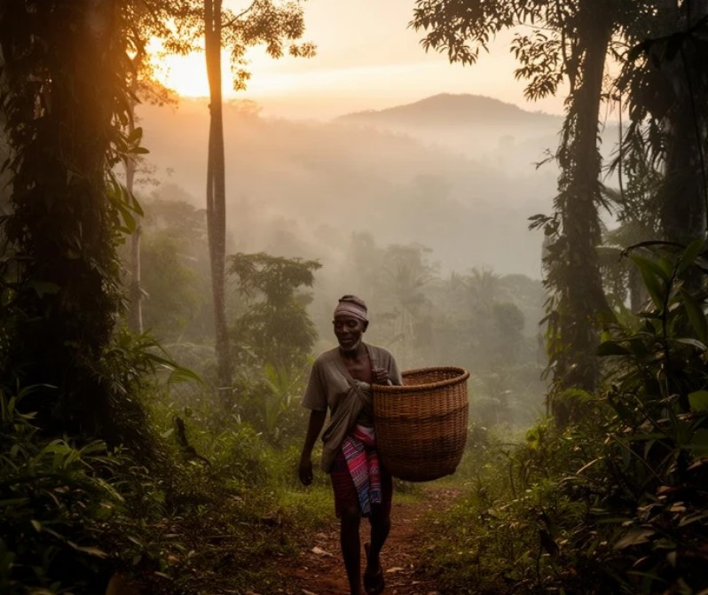
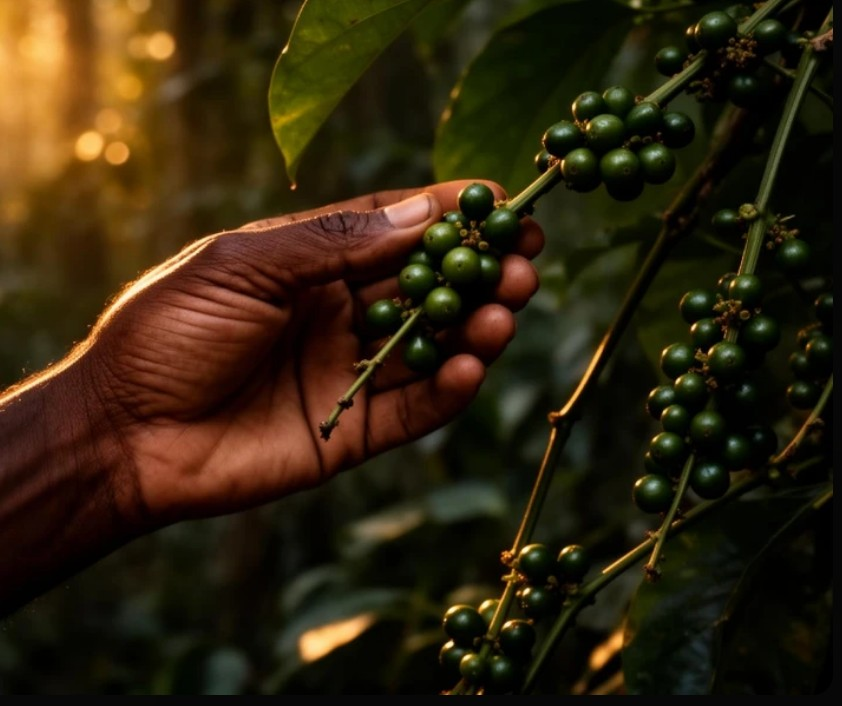
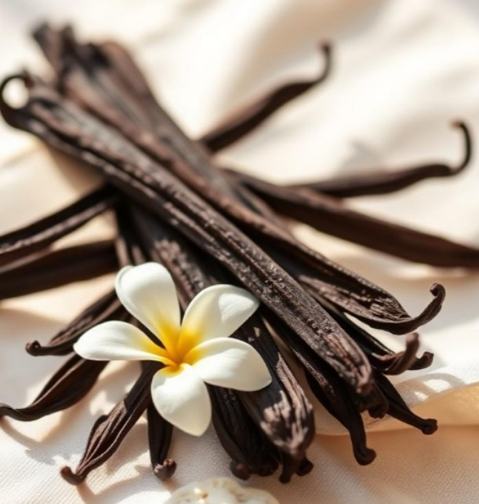

Notre histoire
Né d'une rencontre entre un terroir d'exception et une exigence sans compromis, ORAVANY révèle au monde les épices les plus rares de Madagascar, à travers une démarche éthique, sensorielle et profondément humaine.

Le commencement
Tout a commencé par un voyage au cœur des forêts tropicales malgaches. Là-bas, des familles de récoltants perpétuent une cueillette ancestrale du poivre sauvage Voatsiperifery, l'or noir sauvage de Madagascar. Une liane rare qui grimpe sur les arbres centenaires, et dont chaque grappe est cueillie à la main, parfois à plus de 15 mètres de hauteur.
Saisis par la richesse aromatique de cette épice, mais aussi par la beauté du geste et la fragilité de ce savoir-faire, nous avons fondé ORAVANY pour transmettre au monde cette excellence, en respectant chacun des maillons, du récoltant au consommateur.

Notre savoir-faire
Chez ORAVANY, rien n'est laissé au hasard. La récolte est manuelle, à pleine maturité ; le séchage, lent et naturel sous le soleil tropical ; le tri, méticuleux, baie par baie, gousse par gousse ; le conditionnement, soigné dans notre atelier d'Antananarivo.
Cette exigence artisanale permet à chaque épice d'atteindre une concentration aromatique exceptionnelle. celle que les grands chefs reconnaissent immédiatement. Aucun arôme ajouté. Aucun compromis sur l'origine ou la qualité.

Nos engagements
100% de nos épices viennent de Madagascar, traçables jusqu'à leur village d'origine. Nous collaborons directement avec des récoltants et producteurs malgaches valorisant un savoir-faire transmis de génération en génération, dans une démarche respectueuse des cycles naturels et de la biodiversité.
Une partie de chaque vente est reversée à des projets locaux : reboisement, accès à l'eau potable, scolarisation des enfants. Acheter une épice ORAVANY, c'est soutenir un terroir vivant, préservé, et profondément humain.
Nos engagements
Cueillette respectueuse des cycles naturels et de la biodiversité locale
Collaboration directe avec les producteurs malgaches et leur savoir-faire
Chaque lot rigoureusement sélectionné pour une expérience exceptionnelle
Aucun arôme ajouté. Aucun compromis sur l'origine ou la qualité.
Explorez notre collection et faites entrer dans votre cuisine l'âme aromatique de Madagascar.
Voir la boutique